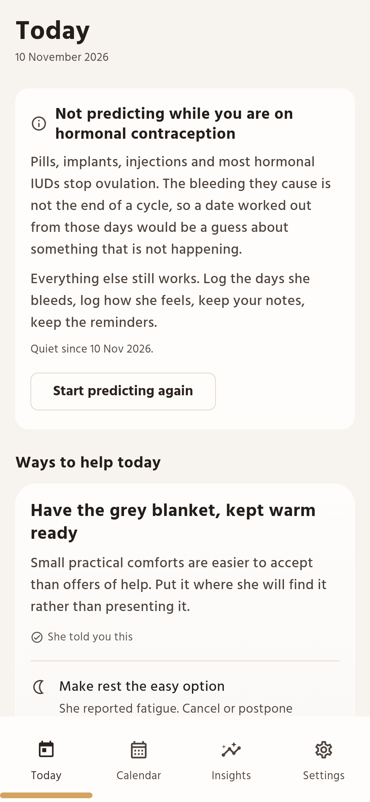
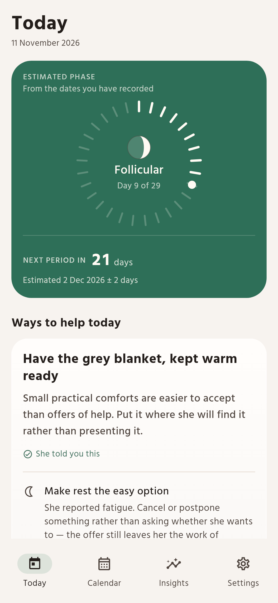
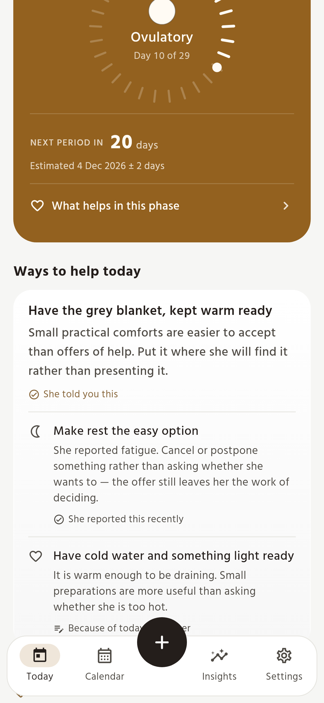
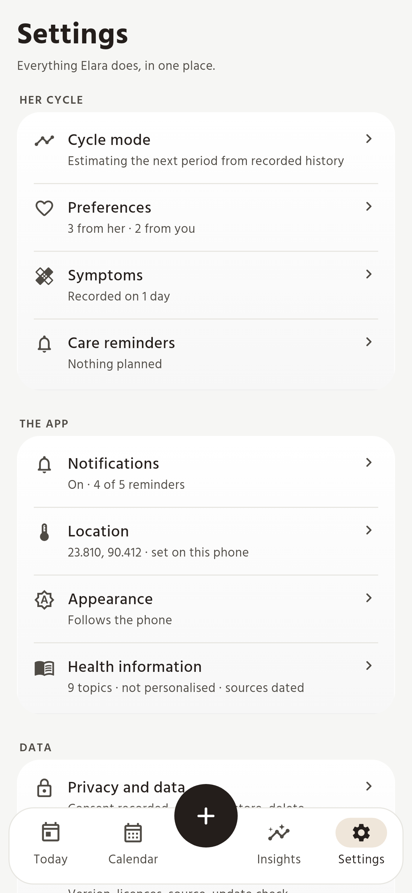
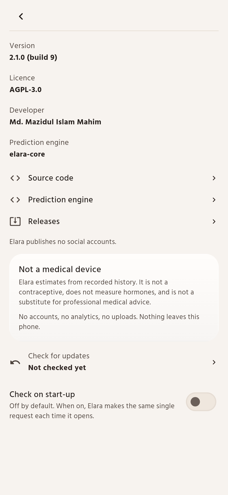

What it does
- Remembers the dates. An estimate of the next period, with the uncertainty stated in days rather than hidden.
- Suggests something kind. A few ideas for the day, in words, ranked by what she has actually said over what a calendar implies.
- A practical guide for each phase. It offers choices — take a chore, make space, or ask what would help — while keeping general ideas separate from preferences she has shared herself.
- Reads the weather, not her mood. Heat and air quality shape the advice. Hormones are never used to explain a person.
- Stays on the phone. The history is written to the app’s own storage and stays where it was written.
When a prediction is not the answer
A calendar estimate assumes there is a cycle to estimate. On hormonal contraception there is not one: bleeding is withdrawal or breakthrough, and a countdown built from those days would describe something that is not happening. The same is true of a pregnancy, a loss, and the months after a birth.

- Three honest modes. Estimate the cycle, say she uses hormonal contraception, or pause — for a pregnancy, a loss, after a birth, or simply because she would rather not be given a date.
- A countdown that stops through a loss. The first period after a loss can take weeks, so Elara holds the countdown and the reminders quiet until they are useful again.
- Every recorded day stays. Switching a mode off keeps everything you logged, and prediction picks up again whenever it is useful.
A look




Every image above is a real render of the running app over a fixed
fictional dataset, published exactly as the render wrote it. The
screenshots captured from the compiled APK on an emulator, with the
Android system bars in frame, are in the repository under
docs/device-screenshots/.
Questions
Where is my data kept?
On this phone, in the app’s own storage. Elara makes two kinds of request: a weather forecast for the district you pick, and an update check you switch on yourself. Auto Backup is off at the manifest level, so the history stays where it was written; moving it to another phone is the encrypted export you run, under your own passphrase.
How accurate is the estimate?
It depends entirely on the history. Three estimators run on your recorded period starts and the app shows the window they agree on: a steady history gives a window of a day or two, an irregular one gives a week, and if the history is too short to say anything the app says that instead of inventing a date. It is arithmetic on the dates you log, from the elara-core ensemble - Elara's own ensemble developed from OpenCiclo and Flowlytics as upstream sources, and where contraception is the question it points you to a clinician.
What if I am on the pill, or pregnant, or have just given birth?
You tell the app once and it stops forecasting, with the reason stated on the home screen. Pills, implants, injections and hormonal IUDs stop ovulation, so there is no cycle to estimate and a countdown would be a lie. Everything that does not depend on a forecast — your notes, the reminders, the health information — stays.
Is it only for couples?
No. The app is written for one person to use, and the partner-facing suggestions are a layer on top rather than the point. Used alone it is a cycle log that refuses to pretend to certainty; used together, the suggestions are a way of being useful without asking someone to explain herself every evening.
Why Bangla fonts and Hijri dates?
Because the phone it is written for is in Bangladesh. Bangla is a first language for most of the people this is for, the heat index matters more than the air temperature for most of the year, and a calendar that shows Hijri and nakshatra alongside the Gregorian date is normal here rather than exotic. The prediction is the same either way.
Can I get my data out?
Yes, as one encrypted file under a passphrase you choose. The file holds the cycle dates; location, notes and settings stay where they are. Restore puts it back on the same phone or a new one. There is also one button that withdraws consent and deletes everything on this phone.
Why is it not on the Play Store?
A store listing would mean a $25 developer account, a review queue and a data-safety form. I’m not paying $25 to distribute a free app that collects nothing. The APK comes from GitHub instead: built from the source you can read, signed, and published on the releases page. What the page in front of you says about storage is exactly what the code does.
Install notes
The 64-bit build is the small one, and it covers almost every phone made since 2015. Android will ask you to confirm the install — Elara is not on the Play Store.
Need the universal APK? (32-bit phones, emulators)The download comes straight from the releases page, and this page is a single file served by GitHub Pages. If it is inconvenient, building from source gives the same APK.